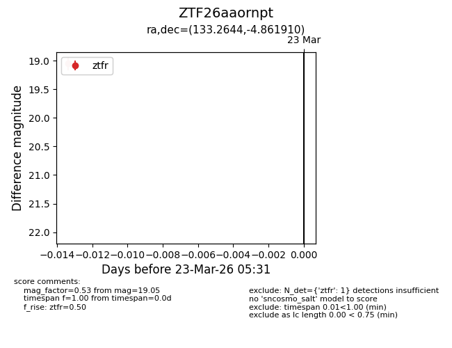
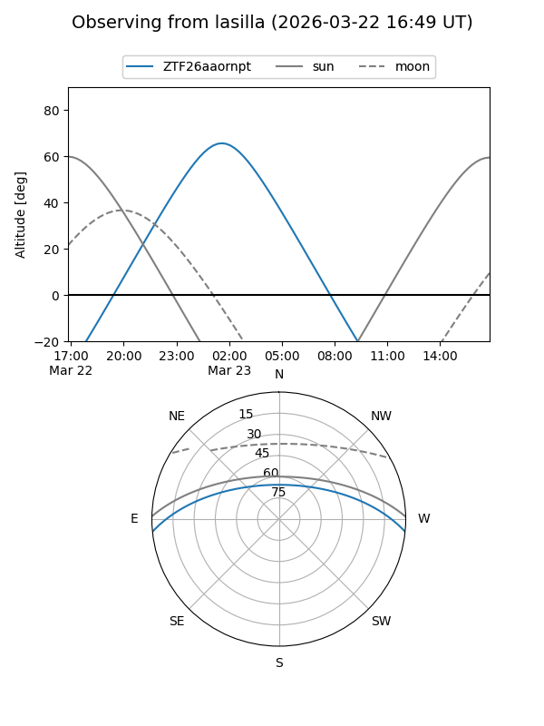
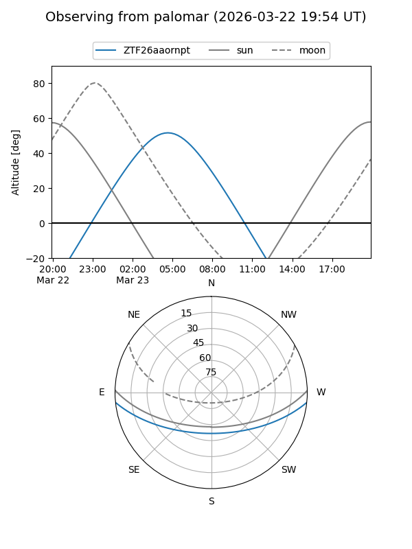

ZTF26aaornpt
Target ZTF26aaornpt at 2026-03-23 05:33
Aliases and brokers:
FINK: link
Lasair: link
ALeRCE: link
alt names
ZTF26aaornpt (ztf,fink_ztf)
Coordinates:
equatorial (ra, dec) = 133.2644,-4.86191
equatorial (HMS+DMS) = 08:53:03.45,-04:51:42.88
galactic (l, b) = (232.4946,+24.21502)
Flags:
Photometry:
last ztfr=19.05
1 ztfr detections
Lightcurve

Visibility


Additional plots